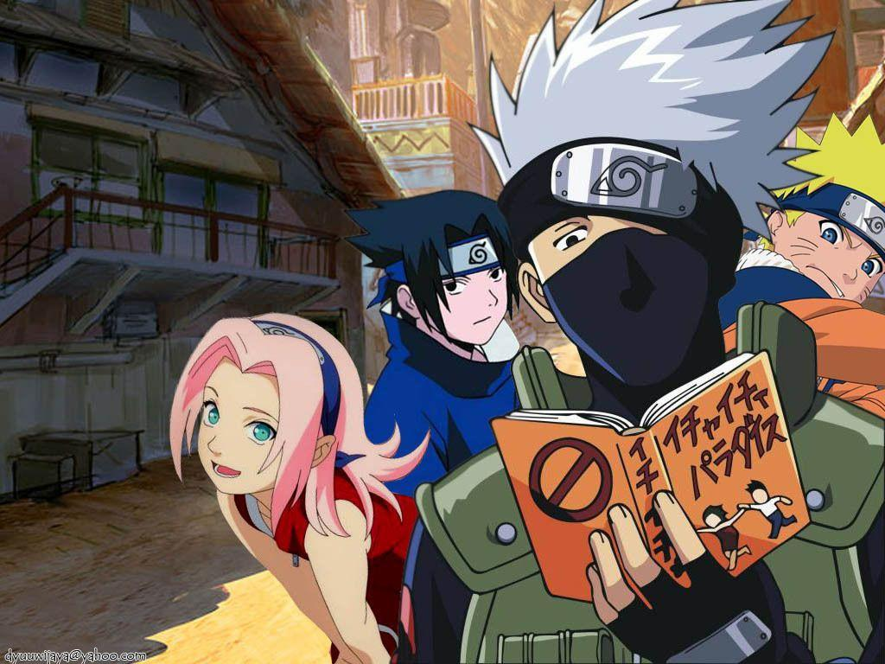

Who is Naruto?
Naruto is a young, simple-minded, hot-headed ninja who is from Konohagakure, aka The Village Hidden In The Leaves. Naruto is a self-motivated ninja with a unique drive to become the village's Hokage, that sets him apart from everyone else. He is the Nine Tails Jinchuriki (a host for a Tailed Beast) and because of that, everyone around him looks at him like he isn't a human being. His father, the fourth hokage, died for the village along with Naruto's mother, when it was under attack by the Nine Tailed Beast, right after the birth of Naruto and had sealed the Chakra of the Nine Tails inside Naruto, which is the reason to why he is a Jinchuriki. Naruto's source of strength and true power comes from his loneliness and his derived arrogance. But over time, he made everyone begin to acknowledge his true power and his love for the Hidden Leaf Village by becoming THE GREATEST NINJA EVER!
Naruto and Team 7
Naruto's Qualities
- Naruto was hated by his entire village
- He loves ramen
- He is friends with the demon inside of him
- He has whiskers
- Naruto's dream is to be Hokage